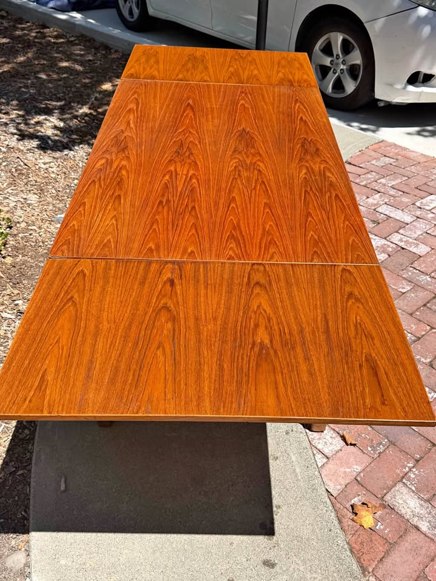
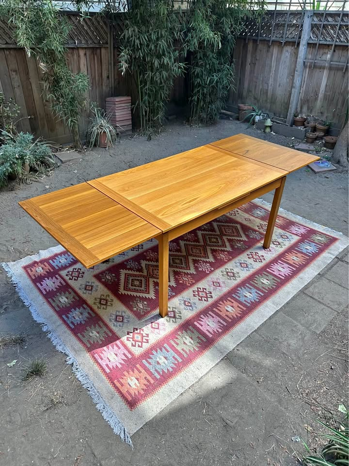

461 Anderson — Dining Table Watch
Mid-century modern · extendable to seat 8 · Danish teak/walnut preferred · driveable from the Bay Area
Updated August 22, 2026Current, click-verified, in-budget picks only · ★ value = price vs. quality
⚡ Look at right away
- 🌟 The best table this search has ever turned up just posted — and it's in budget. A Danish Modern XL teak draw-leaf by Ansager Møbler, listed Aug 20 in the Mission for $1,700. It measures 72" × 48" closed and opens to 112" — that is 18" wider and 19" longer than every other table on this board, on four rounded, tapered solid-teak legs, fully refinished with a hand-rubbed oil finish. Delivery $50–60. This is the one to go see. View listing
- 🚨 Petaluma $650 is gone. The Danish-Control-stamped 93" table that was #2 last run now redirects to "product unavailable" — sold or pulled. That is two cheap four-leg Danish tables lost in five days (Pleasanton $600 went the same way). The under-$700 tier does not sit around.
- 💰 Walnut Creek dropped again — now $495, was $675. A clean 90" four-leg teak draw-leaf with nothing to fix, under five hundred dollars. Second cut in a week; the seller is clearly motivated. View listing
- 🆕 New in SF at $900: a Danish-made 53" → 93" table with self-storing leaves and tapered legs, listed three days ago, photographed fully extended and looking excellent. View listing
- 🏆 The $450 Santa Rosa Ansager is still live. Re-opened this run: $450, In stock, stamped Ansager Møbler #3205 64.01, Made in Denmark, 53" → 92", legs unscrew for transport. Still the best price-to-piece on the board. View listing
- 😕 The set of 8 D-Scan chairs sold. Marked Sold this morning — that was the best per-chair price on the board. A replacement set of six is on the Chairs tab at $750.
- Watchlist — the Gudme finally dropped. The Gudme Møbelfabrik walnut expandable (priority maker, 63¼" → 101½", delivery included from Folsom) now reads $2,050 on the listing page itself — down from the $2,995 that was there last week. It is $50 over the ceiling, which is a single text message away from qualifying. Listing runs to ~Sep 11.
- Four new rule-outs. An SF "Teak Dining Table with Pull Out Leaves" ($1,695) is lovely but extends to only 83" — one inch short. An SF butterfly-leaf teak ($1,680) is a U.K. import. A just-listed Ansager square in Walnut Creek ($750) reaches only 67". A Roseville teak ($1,500) lists no maker and no dimensions and is 2 hours out.
Budget $1,000–$2,000 (table alone) · extends to ≥84" · Danish teak/walnut/rosewood · four legs (no pedestal/trestle)
Tables · in budget

Ansager Møbler Teak Draw-Leaf Dining Table
A stamped, numbered Ansager Møbler — a priority Danish maker — extending to 92" on four legs, for $450. Named Danish tables of this size normally start around $1,200 used; the seller herself notes it lists for $2,500 online. Nothing on this board comes close on price-to-piece.

Danish Modern XL Teak Draw-Leaf by Ansager Møbler
A fully refinished Ansager Møbler in a size that simply doesn't come up: 72" × 48" closed, 112" extended. At $1,700 it is the most expensive table here, but it's also the only one that seats twelve, the only one 48" deep, and it needs nothing done to it. This is the "buy it and stop looking" option.

Vintage Teak Extending Dining Table
A honey-teak draw-leaf table extending to 90" on four legs, now under $500 after a second price cut, with nothing to fix and gorgeous book-matched grain. No named maker is the only thing keeping it out of the top two.

Vintage MCM Teak Dining Set — Table + 6 Chairs
A full solid-teak set — table plus six matching teak chairs — for $580, on four clean tapered legs. Since the budget is for the table alone, six chairs (worth ~$600–1,200) come essentially free. With the D-Scan set of 8 now sold, this is the only pick that solves the chairs problem outright.

Vintage Danish Modern Teak Extension Table
A stamped Made in Denmark teak extension table that opens to 93", holding at $600. It slips behind the cheaper picks only because the workshop is unnamed and the top has more visible wear.

Vintage Danish Extendable Table with Self-Storing Leaves
Danish-made, 93" extended, with both leaves tucking under the top so there is nothing to store in a closet — and unusually, the seller photographed it fully open in daylight so you can see exactly what you're getting. Priced at $900 OBO it sits mid-pack: better documented than most, but unbranded and twice the Santa Rosa Ansager.

Danish Modern Teak Draw-Leaf by Ansager Møbler
A confirmed Ansager Møbler, freshly refinished to like-new and extending to 93" — still good value at $950. But the same seller now has the XL 112" version listed, and a stamped Ansager sits at $450 in Santa Rosa, so this one is squeezed from both sides.

Vintage Danish Teak MCM Expandable Dining Table
Honest Danish teak at 94" extended — but you're buying largely on trust. There is still no photograph of it assembled, no maker mark, and the listing quotes two different prices, so the value rating stays held down until you've seen it standing up.
Gone this run: Petaluma $650 (Danish Control stamp, 93", four legs) — listing now redirects to "unavailable". It was #2 last run. Set of 8 D-Scan chairs, $1,000 — marked Sold.
New DQs this run: SF "Teak Dining Table with Pull Out Leaves" ($1,695, Stuff by Luxe) — 49" → 83", one inch under the floor. SF butterfly-leaf teak ($1,680) — U.K. import, stated in the title. Walnut Creek Ansager Møbler square draw-leaf ($750, listed 2 days ago) — priority maker, but 67" fully extended. Roseville teak expandable ($1,500) — no maker ("I'm not sure of the manufacturer"), no dimensions posted, teak veneer top, and ~2 hours out.
Ruled out (standing): Gudme rosewood expandable ($900, SF) — twin-pedestal base. Vejle Stole Møbelfabrik ($1,995, SF) — priority maker but only 76" extended. Dyrlund teak oval ($1,750, Hayward) — ceramic-tile top. Sonoma Skovby ($800) — twin cylindrical pedestal, peeling veneer. Millbrae ($799) — 100" but arched trestle base. Los Gatos ($1,000) — 78". El Cerrito ($1,150, was $2,500) — two separate gate-leg tables. Fremont ($550) — made in Singapore. Novato built-in-leaf ($1,750) — trestle. Albany draw-leaf ($1,000) — 67". Gangsø teak ($850, SF) — ~63". Sebastopol square draw-leaf ($500) — no dimensions posted. Alameda ($1,250) — 72" max, laminated top. San Leandro refinished ($1,700) — clears 90" but unbranded and now beaten outright by the SF Ansager XL at the same price. Refinished Skovby ($2,950), Sonora sunburst ($2,000, round), Børge Mogensen drop-leaf ($3,200), two SF tables at $2,200 and $2,500 — over budget. Heywood-Wakefield ($895) — American. Meredew, McIntosh, Nathan, Remploy, G-Plan and other UK imports.
Watchlist: Gudme Møbelfabrik walnut expandable — now $2,050 on the listing page (down from $2,995 last week; the price finally matches what search results showed). Priority maker, 63¼" → 101½", 41½" wide, original table pads included, delivery included from Folsom. $50 over the $2,000 ceiling — one negotiation away from making the board. Listing runs to ~Sep 11.
⚡ Chairs — quick read
- 🚨 The set of 8 D-Scan chairs sold. $1,000 for eight authenticated teak chairs was the best per-chair price this search had found, and it's gone. Removed from the board.
- 🆕 A replacement six at $750 (was $950), Berkeley. Teak-framed Danish-style chairs by Sun Furniture — two armchairs plus four sides, in a plain oatmeal fabric that already looks like what you want. ~$125/chair, the cheapest per seat on the board. Caveat: Danish style, not Danish-made, and the seller notes stains on the seats.
- Two tables still solve this outright. The Palo Alto $580 table includes six matching teak chairs. And the $450 Santa Rosa Ansager seller will add four D-Scan teak chairs for $600 — table plus 4 chairs for $1,050 from one pickup, though you'd be two short of eight.
- No upholstery project: six Danish teak chairs, $1,000 from the same SF seller as the Ansager tables — two captain's chairs plus four sides, already reupholstered. Pricier per chair, nothing to do, and one pickup if you take either SF Ansager.
Budget $1,200–$2,400 for six · MCM teak/walnut that coordinates with the table · easy, clean fabric · driveable / delivers
Chairs · sets of 6+ · in budget

Set of 6 Danish-Style Teak Dining Chairs by Sun Furniture
Six teak-framed chairs — two with arms, four without — at $125 each after a $200 cut, in exactly the plain oatmeal fabric this room wants. The catch is honesty about what it is: Danish style by Sun Furniture, not a Danish workshop.

Six Danish Modern Teak Dining Chairs
Two captain's chairs plus four sides in solid teak with sculpted arched backs, already reupholstered in fresh fabric — no recovering project. $167/chair is more than the Berkeley set, but these are genuinely Danish and it's the same seller as both SF Ansager tables.
Worth knowing: the seller of the $450 Santa Rosa Ansager table will sell four D-Scan teak chairs for $600 alongside it — $150 each, fine as a starting point, not a solution for eight. The SF Ansager seller also advertises multiple sets of Danish teak chairs beyond the six listed — worth asking whether any set of eight is available.
Seen but set aside: Set of 8 D-Scan teak ($1,000, Richmond) — SOLD this run. Set of 8 Danish teak, free delivery ($1,600, San Rafael) — sold / delisted. Set of 6 D-Scan teak ($1,200, Novato) — pricier per chair. Six H.W. Klein for Bramin, refinished ($2,795, Richmond) and Johannes Andersen teak 6 ($2,650) — over the $2,400 ceiling. Nathan teak 6 ($1,280, SF) — UK import. A floral-upholstered 6 ($2,400) — busy fabric.